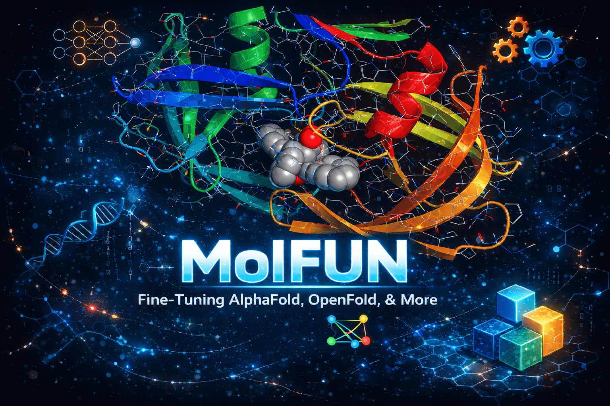

Home

Fine-tune protein structure prediction models with modular, plug-and-play architecture. Swap attention heads, plug in LoRA adapters, track experiments, and export to production --- all from a single unified API.
Why Molfun?¶
Everything you need to fine-tune and deploy protein structure models, in one framework.
Training Strategies¶
Four interchangeable fine-tuning strategies out of the box: Full, Head-Only, LoRA, and Partial. Swap strategies in one line without touching the training loop.
Modular Architecture¶
Type-safe registries for attention modules, blocks, embedders, and structure modules.
Build custom architectures with ModelBuilder or hot-swap components at runtime.
Data Pipeline¶
Fetch structures from RCSB PDB, parse PDB/mmCIF/A3M/FASTA/SDF/MOL2 files, generate MSAs, and load affinity data --- all through a consistent, composable API.
Experiment Tracking¶
First-class integrations with WandB, Comet, MLflow, Langfuse, and HuggingFace.
Or use CompositeTracker to log to multiple backends simultaneously.
Triton Kernels¶
GPU-accelerated RMSD computation (800x speedup) and contact map generation (45x speedup) via custom Triton kernels. Automatic fallback to CPU when no GPU is available.
Production Export¶
Export trained models to ONNX or TorchScript for deployment. Push and pull models from the HuggingFace Hub with a single method call.
Quick Start¶
Get up and running in minutes.
Predict the 3D structure of a protein from its amino acid sequence:
from molfun import MolfunStructureModel
model = MolfunStructureModel(backend="openfold")
output = model.predict(sequence="MKFLILLFNILCLFPVLAADNH...")
# Access coordinates, pLDDT scores, and predicted aligned error
coords = output.atom_positions # (N_residues, 37, 3)
plddt = output.plddt # (N_residues,)
Fine-tune a pretrained model on your own dataset with LoRA:
from molfun import MolfunStructureModel
model = MolfunStructureModel(backend="openfold")
model.fit(
train_dataset=my_dataset,
strategy="lora", # or "full", "head_only", "partial"
lora_rank=8,
epochs=10,
lr=1e-4,
tracker="wandb", # experiment tracking
)
# Export for deployment
model.export("onnx", path="model.onnx")
Build a model with custom components using the module registry:
from molfun.modules import ModelBuilder, ATTENTION_REGISTRY
# Register a custom attention module (or use built-in ones)
model = (
ModelBuilder(backend="openfold")
.set_attention("flash_attention")
.set_block("evoformer_v2")
.set_embedder("esm2")
.set_structure_module("invariant_point")
.build()
)
# Wrap it for training
from molfun import MolfunStructureModel
molfun_model = MolfunStructureModel(model=model)
molfun_model.fit(train_dataset=my_dataset, strategy="full")
Architecture Overview¶
How the pieces fit together.
graph TD
CLI["<b>CLI</b><br/>molfun predict / fit / export"]
API["<b>MolfunStructureModel</b><br/>Unified Facade"]
PRED["predict_structure()<br/>predict_properties()<br/>predict_affinity()"]
CLI --> API
PRED --> API
API --> ADAPT["<b>Adapters</b><br/>OpenFold · ESMFold"]
API --> TRAIN["<b>Training Strategies</b><br/>Full · Head-Only · LoRA · Partial"]
API --> MOD["<b>Module System</b><br/>Attention · Blocks · Embedders<br/>Structure Modules · Registries"]
API --> DATA["<b>Data Pipeline</b><br/>Fetchers · Parsers · MSA<br/>Datasets · Splits"]
API --> TRACK["<b>Tracking</b><br/>WandB · Comet · MLflow<br/>Langfuse · Console"]
API --> EXPORT["<b>Export</b><br/>ONNX · TorchScript<br/>HuggingFace Hub"]
style API fill:#7c3aed,stroke:#6d28d9,color:#ffffff
style CLI fill:#3b82f6,stroke:#2563eb,color:#ffffff
style PRED fill:#3b82f6,stroke:#2563eb,color:#ffffff
style ADAPT fill:#16a34a,stroke:#15803d,color:#ffffff
style TRAIN fill:#d97706,stroke:#b45309,color:#ffffff
style MOD fill:#c026d3,stroke:#a21caf,color:#ffffff
style DATA fill:#0d9488,stroke:#0f766e,color:#ffffff
style TRACK fill:#ea580c,stroke:#c2410c,color:#ffffff
style EXPORT fill:#0891b2,stroke:#0e7490,color:#ffffffWho Is This For?¶
Computational Biologists¶
Use high-level convenience functions to predict protein structures, stability, and binding affinity without writing training loops. Fetch data directly from RCSB PDB and run inference with pretrained models.
ML Engineers¶
Leverage the modular architecture to swap model components, apply PEFT techniques like LoRA, export to ONNX/TorchScript, and integrate with your existing MLOps stack via WandB, MLflow, or Comet.
Researchers¶
Extend the framework with custom attention modules, novel loss functions, or entirely new backends. The registry-based plugin system and strategy pattern make it straightforward to experiment with new ideas.
Ready to dive in?
Head over to the Getting Started guide to install Molfun and make your first prediction, or explore the Architecture overview to understand how the system is designed.